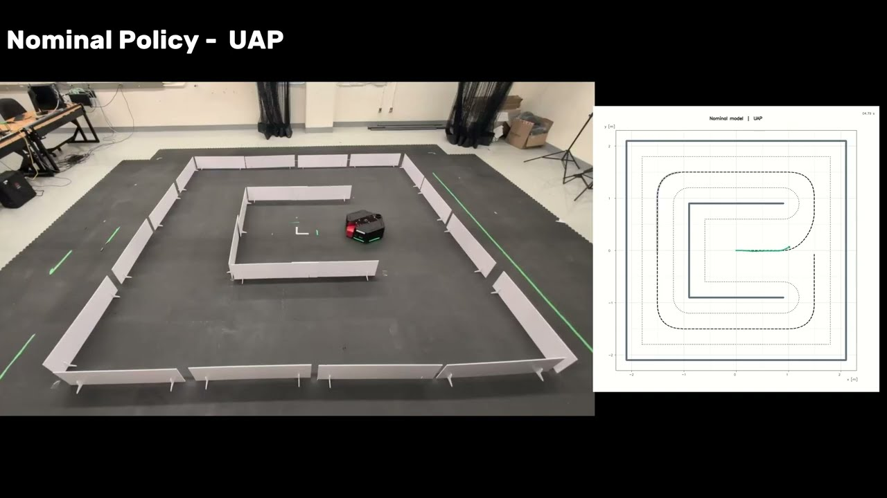
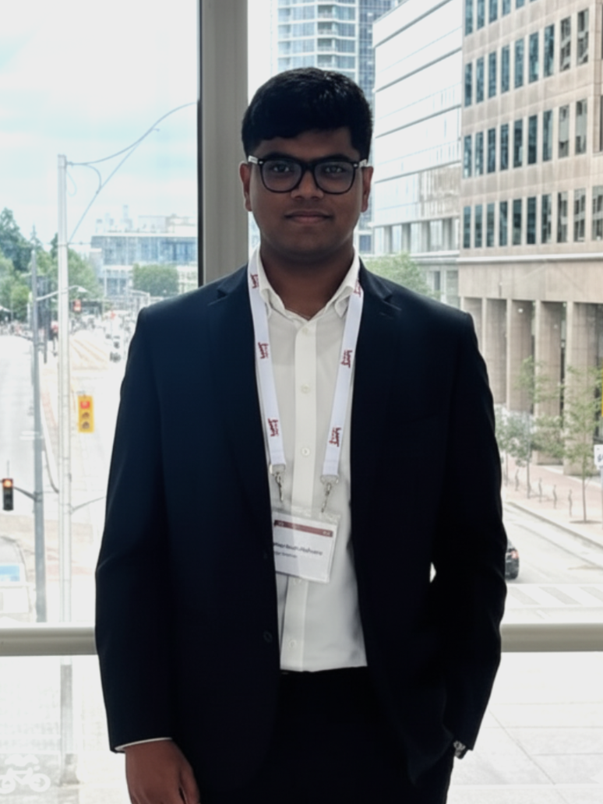
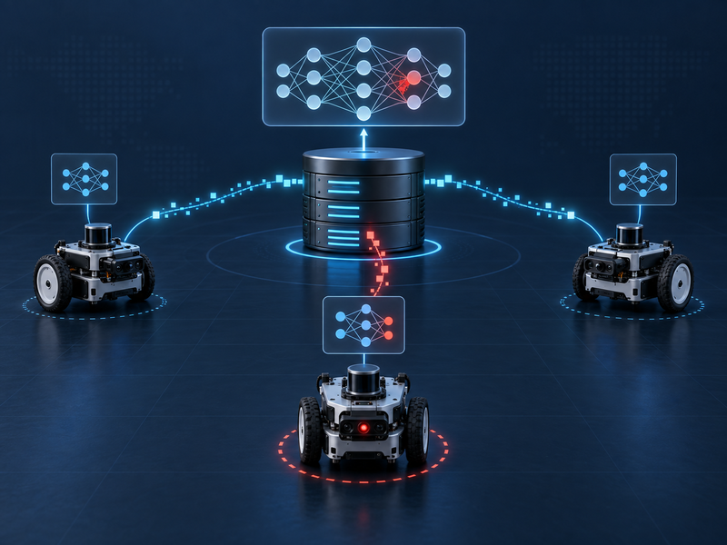
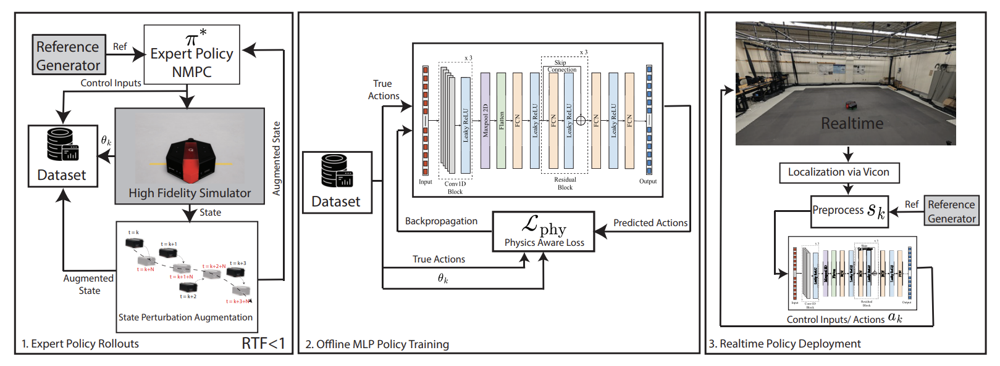
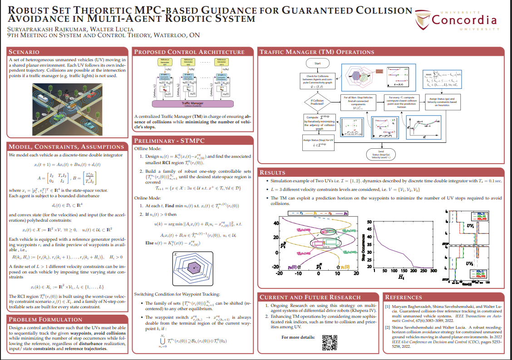
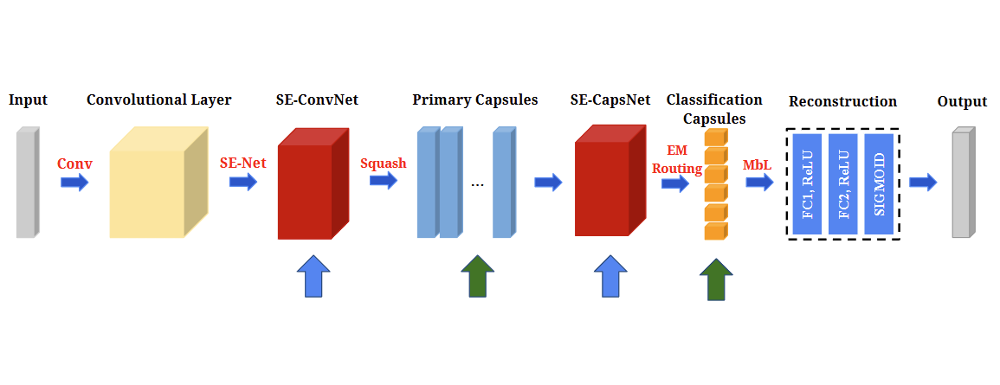

Manuscript
Universal Perturbation Attacks on Neural Network Controllers for Wheeled Mobile Robots
IEEE Transactions on Control Systems Technology (TCST), submitted
Research figure

Robotics · Control · Learning
PhD Researcher · Concordia University

I am a PhD researcher in Information Systems Engineering at Concordia University, supervised by Prof. Walter Lucia in the Predictive Cyber-Physical System Security (PreCySe) Group. My research focuses on enabling autonomous robots to operate safely, reliably, and efficiently by combining model-based control with data-driven learning.
My work spans learning-based trajectory tracking, set-theoretic collision avoidance, and predictive control for autonomous and multi-agent robotic systems. A central goal of my research is to bridge rigorous safety and control guarantees with computationally efficient methods that can be implemented in real time on affordable robotic platforms.
Research interests
Mobile and aerial robotics · Optimal and predictive control · Imitation learning · Safe multi-agent systems
IEEE Transactions on Control Systems Technology (TCST), submitted

IEEE Transactions on Industrial Informatics, submitted

Manuscript in preparation for IEEE Transactions on Robotics (T-RO)

IEEE 22nd International Conference on Automation Science and Engineering, 2026

Biannual Meeting on Systems and Control Theory (MSCT), Waterloo, Canada, 2023

IEEE International Conference on Electronics, Computing & Communication Technologies, Bangalore, India, 2021

International Conference on Robotics, Intelligent Automation and Control Technologies, Chennai, India, 2021

International Conference on Intelligent Robots and Systems (IROS), Prague, Czech Republic, 2021

Concordia University
Montreal, Canada
Concordia University
Montreal, Canada
Vellore Institute of Technology
Chennai, India
Tecnológico de Monterrey
Monterrey, Mexico
ARTPARK, Artificial Intelligence and Robotics Laboratory, IISc
Bangalore, India
Robotics Innovations Lab, IISc
Bangalore, India
Arizona State University
Phoenix, USA
Aero2Astro
Chennai, India
Yuan-Ze University
Taoyuan City, Taiwan
Designed a command governor cyber-attack detection solution to detect attacks on setpoints/references shared through a network which was tested on a high-fidelity simulation of a fleet of naval vessels.
Architected and implemented an LSTM-GAN network to detect attacks on GNSS through a discriminator network and generate optimal attack vectors through a generator network that cannot be detected through classical statistical-based cyber-attack detection mechanisms.
For a copy of my CV or to discuss research, please get in touch by email.
suryaprakash.rajkumar@concordia.ca
Office EV10.210, GW Campus · Concordia University